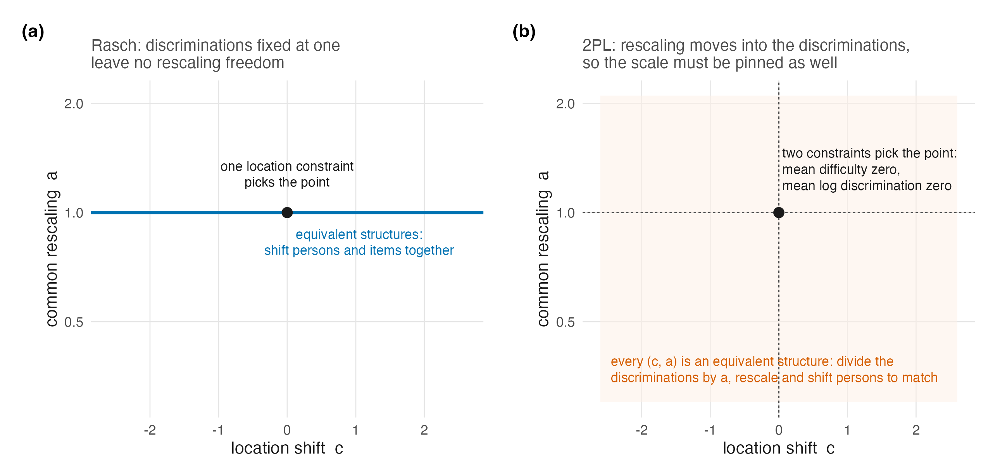

26 Identification and the DPM Under the Two-Parameter Model
Chapter 4 separated location from scale and showed that under the Rasch model the scale question either disappears (discriminations fixed at one) or, in one parametric case, resolves from the data. Chapter 16 then carried the location argument into the semiparametric model and stated, in Proposition 16.4’s careful form, what an infinite-dimensional \(G\) leaves identifiable from a finite test. Both chapters did their work under \(\lambda_i \equiv 1\). This chapter asks what survives when the discriminations are free, and answers in four parts: the location and scale freedoms form one positive-affine orbit; the companion package exposes both within-model constraints and draw-wise post-hoc normalization; the simulation and case-study analyses used different members of those two computational regimes; and a finite known-item 2PL identifies only response-pattern functionals of \(G\), while the sharp joint result with free item parameters remains open.
26.1 The scale comes back
Under the 2PL the linear predictor is \(\lambda_i(\theta_p - \beta_i)\). For \(c\in\mathbb R\) and \(a>0\), Equation 16.2 gives the full joint orbit
\[ \theta_p^*=a(\theta_p-c),\qquad \beta_i^*=a(\beta_i-c),\qquad \lambda_i^*=\lambda_i/a, \]
with \(G^*\) the push-forward of \(G\) under the same positive-affine map. Thus \(\lambda_i^*(\theta_p^*-\beta_i^*)=\lambda_i(\theta_p-\beta_i)\) exactly. The restriction \(a>0\) preserves the orientation of the trait and positivity of every discrimination. The scale freedom that Proposition 16.2 showed the Rasch model does not have is restored by exactly the parameter the 2PL adds; location freedom persists as before. Figure 26.1 draws the two coordinates of this single orbit side by side.

As in Chapter 4, naming the orbit also names the repairs. One can pin the latent side by fixing the location and scale of \(G\), as a standard-normal ability distribution does. Or one can select an item-side representative by centring difficulties and discriminations, either inside the sampled model or by transforming every draw afterward while leaving the shape of \(G\) free. What one cannot do is treat either convention as if the data chose the metric: the normalization chooses a representative, and results on one metric do not transport to another unless the whole affine conversion is stated.
26.2 The two identification regimes the software actually exposes
Following the discipline of Chapter 10, the model must be described from the package source rather than from a preferred abstraction. DPMirt exposes two distinct 2PL routes (Lee 2026c). Its model-specific default is identification = "unconstrained" (R/utils.R, lines 94–120). The raw model therefore samples \(\beta_i\), \(\lambda_i\), and the latent distribution without an in-model centring equation (R/model_spec.R, lines 427–449 and 501–529). Because the top-level fit function separately defaults to rescale = TRUE, it then maps every retained draw \(s\) to
\[ c_s=\overline\beta_s,\qquad d_s=\left(\prod_{i=1}^I\lambda_{is}\right)^{-1/I},\qquad \beta_{is}^*=\frac{\beta_{is}-c_s}{d_s},\quad \lambda_{is}^*=\lambda_{is}d_s,\quad \theta_{ps}^*=\frac{\theta_{ps}-c_s}{d_s}. \tag{26.1}\]
This is exactly Equation 16.2 with \(a_s=1/d_s=(\prod_i\lambda_{is})^{1/I}\) and \(c=c_s\); hence \(\overline\beta_s^*=0\) and the geometric mean of \(\boldsymbol\lambda_s^*\) is one. The dispatch and formulas are explicit in R/dpmirt.R (lines 109–143 and 281–299) and R/rescale.R (lines 31–55, 80–100, and 194–288).
The alternative is identification = "constrained_item". In that regime the same representative is imposed inside the sampled model:
\[ \beta_i = \beta_i^{\mathrm{tmp}} - \overline{\beta^{\mathrm{tmp}}}, \qquad \log \lambda_i = \log\lambda_i^{\mathrm{tmp}} - \overline{\log\lambda^{\mathrm{tmp}}}, \tag{26.2}\]
with independent normal priors on the temporary coordinates (\(\log\lambda_i^{\mathrm{tmp}}\sim N(0.5,0.5)\) before centring), while the location and dispersion of \(G\) remain free. The implementing blocks are R/model_spec.R, lines 451–472 and 531–559. Mean-difficulty centring pins location; mean-log-discrimination centring pins scale by enforcing geometric mean one.
These routes choose the same likelihood representative but are not thereby the same Bayesian model: the priors are imposed before different constraint operations, and post-hoc normalization does not retroactively turn an unconstrained prior into the singular prior induced by in-model centring. The distinction is operational in the evidence programme. The production simulation job record explicitly sets identification = "constrained_item" and passes it to the engine (production codebase R/fit_jobs.R, lines 183–188; R/fit_preflight.R, lines 177–203); its loss pipeline subsequently maps fitted draws to the raw standardized generating scale. The case-study fit driver passes neither identification nor rescale (code/R/04-fit.R, lines 45–60), so its 2PL fits take the package default: unconstrained sampling followed by Equation 26.1. This is a declared implementation difference, not evidence that one normalization is substantively truer.
Three cautions follow. First, log-centring is one defensible normalization among several; estimates transport only after the full affine conversion. Second, geometric-mean-one is a statement about the reported metric, not a claim that true item discriminations average to one on an external scale. Third, the latent scale rides on the discriminations, so fixed cutoffs, quantiles, and density summaries must travel with the draw-wise transformation.
26.3 What a finite 2PL identifies—and what remains open
Proposition 16.4 is a sharp Rasch result whose \(I+1\) displayed functionals come from raw-score sufficiency. Under the 2PL that compression is gone (Proposition 3.1). A more general finite-pattern statement nevertheless survives.
Proposition 26.1 Response-pattern-functional partial identification under a known-item 2PL. Derived here by finite-dimensional linear algebra.
Fix known item parameters \(\beta_i\in\mathbb R\) and \(\lambda_i>0\) for \(i=1,\ldots,I\). For each response pattern \(\mathbf u\in\mathcal U=\{0,1\}^I\), let
\[ q_{\mathbf u}(\theta)=\prod_{i=1}^I p_i(\theta)^{u_i}\{1-p_i(\theta)\}^{1-u_i}, \qquad p_i(\theta)=\operatorname{logit}^{-1} \{\lambda_i(\theta-\beta_i)\}. \]
The observable pattern law identifies only the integrals
\[ \pi_{\mathbf u}(G)=\int q_{\mathbf u}(\theta)\,dG(\theta), \qquad \mathbf u\in\mathcal U. \tag{26.3}\]
There are \(2^I\) such probabilities and they sum to one, so they supply at most \(2^I-1\) independent scalar functionals of \(G\). Over the unrestricted class of probability measures on \(\mathbb R\), \(G\) itself is not point identified by a finite known-item test.
Proof. The first display follows by local independence and marginalizing \(\theta\). Also \(\sum_{\mathbf u}q_{\mathbf u}(\theta)=1\) pointwise, which gives the normalization and the \(2^I-1\) bound. Put \(K=2^I\), choose \(K+1\) distinct points \(t_1,\ldots,t_{K+1}\), and form the \(K\times(K+1)\) matrix \(A_{\mathbf u j}=q_{\mathbf u}(t_j)\). Some nonzero vector \(h\) satisfies \(Ah=0\). Since every column of \(A\) sums to one, \(\sum_jh_j=0\), so \(h\) has both positive and negative entries. Starting from strictly positive weights \(w_j=1/(K+1)\), choose \(\varepsilon>0\) small enough that \(w_j^{\pm}=w_j\pm\varepsilon h_j\) remain nonnegative. Then \(G_+=\sum_jw_j^+\delta_{t_j}\) and \(G_-=\sum_jw_j^-\delta_{t_j}\) are distinct probability measures, yet \(A\mathbf w^+=A\mathbf w^-\), so every observable response-pattern probability is identical. \(\square\)
The bound is deliberately “at most”: special item configurations can create further dependence. It is also not the Rasch theorem in disguise. Rasch sufficiency reduces the likelihood to \(I+1\) score-indexed functionals and Proposition 16.4 gives their sourced sharp characterization; the known-item 2PL statement keeps the whole response-pattern alphabet and proves only the finite-functional ceiling and non-identification of unrestricted \(G\).
With \(\boldsymbol\beta\) and \(\boldsymbol\lambda\) free, the observable map is joint in the item parameters and \(G\), and it first must be quotiented by the positive-affine orbit above. The finite-alphabet non-identification remains, but a sharp analogue characterizing exactly which joint item-and-\(G\) functionals survive is not established here or in this book’s held sources. That free-item joint problem remains open in Chapter 29.
The identification duties of the DPM itself are unchanged in kind from Chapter 16. The base-measure warning of that chapter applies verbatim — centring \(H_0\) does not centre \(G\) — and now has a scale-side twin: dispersing \(H_0\) does not set the scale of \(G\) either, so under item-side constraints the realized location and dispersion of \(G\) are estimands, to be read from the posterior, not settings to be read from the prior. Across the companion simulation’s full 4,800-fit DP roster, spanning Rasch and 2PL cells, the truncation guard fired five times; its convergence failures did not concentrate in the 2PL DP arms (Lee 2026a). That is an operational receipt for one constrained-item analysis, not evidence of identification in the theoretical sense; the distinction is Chapter 4’s proper-posterior point, still in force.
26.4 Sufficiency, CML, and what the 2PL costs the argument
One consequence deserves restatement because it shapes what the companion volumes can and cannot test. Chapter 5 organized item estimation by what each method assumes about \(G\), with Rasch CML the unique corner assuming nothing. The 2PL has no CML corner: with sufficiency lost, there is no conditioning argument that removes the person parameters, so every 2PL fit in this programme’s evidence, simulation and case study alike, estimates the items jointly with a model for \(G\). It follows that under the 2PL one cannot cleanly isolate “the cost of assuming a wrong \(G\)” from “the item estimates a wrong \(G\) induces,” because there is no \(G\)-free item calibration to serve as the reference arm. The simulation’s Rasch-versus-2PL contrast (H3) is therefore a comparison of packages of consequences, and Chapter 27 reads it that way; the case-study volume’s finding that six of its thirteen cases change shape classification between item models (Lee 2026b) is the same package seen from the real-data side.
26.5 Sources and provenance
The positive-affine orbit and its Rasch absence are Chapter 4’s, resting on San Martín (2016) at the locators given there; Equation 16.2 is the display already carried by Chapter 16. The sharp Rasch partial-identification comparison is Proposition 16.4, resting on San Martín et al. (2011) as read there. Proposition 26.1 is instead an elementary finite-alphabet result derived and proved here: it does not claim a sourced sharp theorem for the free-item 2PL. V8 constructs two distinct finite-support laws with identical known-item pattern probabilities as an executable check of its linear-algebra predicate.
The package contract is read directly from four source surfaces (Lee 2026c): R/utils.R resolves a missing 2PL identification argument to unconstrained; R/model_spec.R contains both unconstrained and constrained-item model blocks; R/dpmirt.R defaults rescale to true and dispatches post-processing; and R/rescale.R implements Equation 26.1. The production simulation job builder and preflight pin the constrained-item branch, whereas the case-study fit driver omits both optional arguments and therefore inherits the package’s unconstrained-plus-post-hoc defaults. The line locators are recorded where the regimes are described in Section 26.2.
The truncation-guard and convergence facts are the simulation volume’s frozen diagnostics, quoted as published (Lee 2026a); the shape-class instability across item models is the case-study volume’s catalogue (Lee 2026b). The remaining-open claim concerns the sharp joint free-item characterization, not the known-item finite-pattern proposition; absence from this book’s held source inventory is disclosed rather than promoted into a theorem.